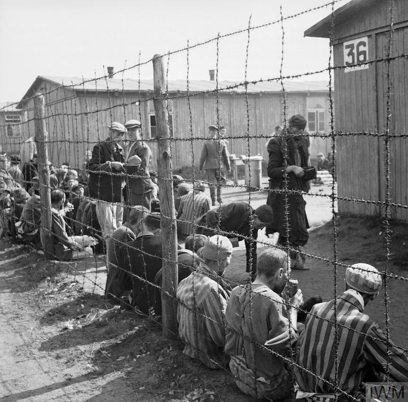

The Holocaust: Persecution, Ghettos, and Systematic Mass Murder
During World War II, Nazi Germany and its collaborators carried out the systematic, state-sponsored persecution and mass murder of six million European Jews alongside millions of others targeted by the regime.
Ideology, Dispossession, and Escalating Persecution

Racial ideology stood at the center of National Socialism long before the outbreak of war in 1939. After taking power in Germany in 1933, the Nazi regime used state decrees, propaganda, policing, and economic pressure to isolate Jews from public life, professions, and citizenship.
The 1935 Nuremberg Laws stripped German Jews of citizenship rights and defined identity along racial lines, accelerating exclusion from civil service, schools, universities, and cultural institutions.
Economic dispossession pushed many Jewish families toward emigration while state-sponsored violence—most visibly during the November 1938 pogroms—destroyed businesses, homes, and synagogues across Germany and Austria.
Emigration faced steep financial barriers, bureaucratic hurdles, and restrictive immigration quotas in many countries abroad, trapping large numbers of people even as persecution intensified.
Once Germany invaded Poland in September 1939, millions more Jews came under Nazi rule, marking a sharp shift from forced exclusion and emigration toward confinement, forced labor, and mass control.
Ghettos, Mobile Killing Units, and Extermination Camps

Across occupied Poland and Eastern Europe, German authorities forced Jewish communities into enclosed ghettos—such as those in Warsaw and Łódź—cut off from normal supplies and subjected to overcrowding, disease, hunger, and forced labor.
Inside these ghettos, communities established schools, soup kitchens, mutual-aid networks, and clandestine archives to preserve dignity, education, and historical memory under severe deprivation.
Following the June 1941 invasion of the Soviet Union, mobile killing squads—known as Einsatzgruppen—alongside German police and auxiliary units carried out mass shootings of Jews, Roma, Soviet prisoners of war, and others across occupied territories.
In early 1942, senior German officials met at the Wannsee Conference to coordinate bureaucratic and logistical mechanisms across ministries and railways for the systematic murder of European Jews.
Purpose-built extermination facilities—including Chełmno, Treblinka, Sobibór, and Bełżec, alongside the Auschwitz-Birkenau complex—combined forced labor selection with industrial mass murder using rail transport from across German-occupied Europe.
Resistance, Survival, and Postwar Remembrance

Resistance took many forms despite overwhelming odds, ranging from smuggling food and forged documents to armed uprisings such as the Warsaw Ghetto Uprising of spring 1943 and revolts inside camps.
Some civilians, neighbors, and diplomats risked their own safety to shelter or issue papers to persecuted individuals, though most of occupied Europe offered limited avenues of escape.
As Allied armies liberated camps and advanced across Europe in 1944 and 1945, survivors faced displacement, illness, and fractured families, with many spending years in displaced-persons camps before resettling.
Preserving survivor testimony, archival records, and historical education remains essential to understanding how modern state bureaucracy, propaganda, and prejudice enabled mass atrocity and why vigilance matters today.
Before the war began, state propaganda and legal decrees steadily narrowed civil rights, livelihoods, and freedom of movement for Jewish citizens in Germany. Exclusion from public offices, schools, and professions was paired with social isolation and mounting economic pressure.
As German authority expanded across Europe during the war, local administrations, police forces, and rail networks were drawn into carrying out deportations, confiscations, and forced labor across very different national and regional settings.
Life inside ghettos and camps was defined by severe deprivation, disease, forced work, and constant danger. Despite harsh conditions, many people sought ways to support families, share information, teach children, and record events so they would not be forgotten.
Across occupied territories, responses from outside observers and local populations varied widely, shaped by fear of severe reprisal, wartime occupation rules, indifference, or acts of rescue and solidarity that saved lives in individual cases.
After liberation in 1945, survivors faced immense challenges rebuilding lives amid displacement and loss, while historians, educators, and communities built archives and memorials to preserve accurate memory and foster historical understanding.
Economic exclusion unfolded step by step across Germany and Austria during the late 1930s through mandatory property registration, forced sales of businesses, professional bans, and special taxes. These measures stripped families of savings and livelihoods precisely when visas, travel tickets, and financial guarantees were most urgently needed to leave Europe.
International conferences such as the July 1938 Évian Conference highlighted the reluctance of most governments to expand immigration quotas during the Great Depression. Even when refugee ships reached foreign ports, strict entry rules forced many passengers back toward continental Europe, narrowing the window of escape before war closed borders in September 1939.
Carrying out deportations across occupied Western, Central, and Southern Europe depended on complex administrative coordination involving civil ministries, local police, census registries, and state rail systems. Occupied and allied governments responded differently—some cooperating closely with German authorities, while others delayed or resisted deportations of their own citizens.
Alongside six million Jews, Nazi persecution targeted millions of other victims, including Roma and Sinti communities, Soviet prisoners of war, Polish and Soviet civilians, people with physical or mental disabilities, Jehovah's Witnesses, and political dissidents, reflecting a broad state system built on racial hierarchy and ideological control.
In the postwar era, historical commissions, war crimes trials, and memorial institutions such as Yad Vashem and the United States Holocaust Memorial Museum gathered millions of pages of documents and oral histories. These collections ground modern historical scholarship and education in verifiable evidence so future generations understand how state-led persecution develops and escalates.
Propaganda played a central role in conditioning public attitudes and normalizing exclusion. Through newspapers, radio broadcasts, films, posters, and school curricula, the regime framed persecution around fabricated security and racial claims while masking the true scale of violence under euphemistic administrative terms.
Forced labor became another pillar of the system as wartime demands grew. Camp inmates and ghetto residents were assigned to factories, quarries, construction sites, and rail projects under brutal conditions, poor nutrition, and minimal medical care, resulting in high mortality even outside dedicated extermination centers.
Studying this history through primary archives, diaries, and survivor accounts helps explain how gradual legal exclusion, bureaucratic compliance, and wartime extremism escalated into systematic mass murder—and underscores why historical accuracy and human rights protections matter deeply today.
Inside ghettos and camps, everyday survival required constant adaptation under severe restrictions on food, fuel, shelter, and movement. Many individuals risked arrest or worse to share scarce rations, pass along news, and keep community life alive despite harsh conditions.
Documenting the events of the Holocaust also relied on people who hid records, diaries, and photographs in walls, jars, and buried containers. Those preserved materials later helped courts and historians piece together how policies were carried out across occupied Europe.
Remembering this period involves honoring the lives lost while examining how state authority, propaganda, and social indifference enabled mass persecution—lessons that remain central to historical education and human rights today.
Across occupied countries, local conditions, timing, and administration varied sharply, creating different pressures and constraints for communities under German control. Where civil structures or local authorities cooperated closely with occupation forces, deportations often moved faster; where obstacles or resistance emerged, schedules sometimes faced friction or delay.
Cultural and educational life in ghettos often reflected quiet determination under extreme pressure. Organizers ran clandestine classes, musical performances, lectures, and community archives aimed at preserving intellectual life and human dignity despite hunger, crowding, and constant threat.
In the aftermath of the war, documenting what occurred and preserving personal testimonies became vital tasks for survivors, historians, and educators. Careful study of this history helps explain how state power, ideology, and bureaucracy can combine to drive systematic persecution and why vigilance remains essential.
Archival collections built from wartime records, postwar trials, and survivor testimonies have given researchers a detailed picture of how administrative policies, rail transport, and camp systems operated across occupied Europe.
Keeping this history accurate and accessible helps ensure that the scale of loss and the mechanisms behind state-sponsored persecution remain clearly understood for future generations.
Through museums, classrooms, and preserved primary records, this history continues to prompt serious reflection on civic responsibility, the rule of law, and the protection of human dignity against state-organized hatred.
Every preserved archive, diary, and testimony strengthens historical understanding and ensures that the lessons of this era endure clearly across generations.
Careful historical study keeps memory grounded in verified evidence and human dignity.